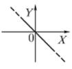
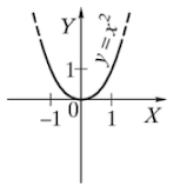
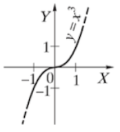
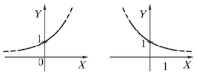
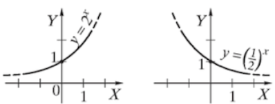
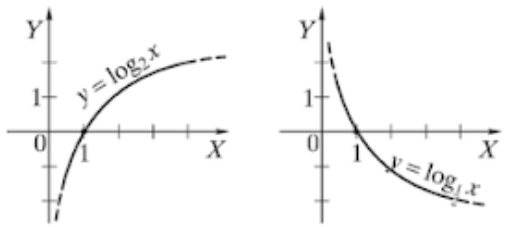

F U N K C I J O S
Gylinkis į matematiką.
Gylinkis į matematiką.
Funkcija y = f(x) = ax + b, čia a ir b - skaičiai, vadinama tiesinè funkcija.
Tiesė y = ax + b (a + 0) ašį OY kerta taške (0; b), o ašį OX - taške (-6; 0).
Tiesinė funkcija y = f(x) = ax+b visoje apibrėžimo srityje yra:



Šioje funkcijoje kai vienas dydis didėja, kitas mažėja taip, kad jų sandauga lieka pastovi.
Formulė paprasta: x · y = k (k - pastovus skaičius).


Funkcija y = f(x) = xn, čia n ∈ N, n > 1, vadinama laipsnine funkcija.


Funkcija y = f(x) = n√x, čia n ∈ N, n > 1, vadinama šaknies funkcija.
Funkcijos y = 2n√x, n ∈ N:
apibrėžimo sritis yra intervalas [0; +∞);
reikšmių sritis yra intervalas [0; +∞).
Funkcijos y = 2n+1√x, n ∈ N:
apibrėžimo sritis yra int... (-∞; +∞);
reikšmių sritis yra int... (-∞; +∞).
y = f(x) = √x, y = f(x) = 3√x - šaknies funkcijos.

Funkcija y = f(x) = ax, čia a - skaičius, a > 0 ir a ≠ 1, vadinama rodìkline fùnkcija.
Rodiklinė funkcija y = f(x) = ax visoje apibrėžimo srityje yra:
didėjanti, kai a > 1;
mažėjanti, kai 0 < a < 1.

Rodiklinės funkcijos y = f(x) = ax:
apibrėžimo sritis yra intervalas (-∞; +∞);
reikšmių sritis yra intervalas (0; +∞).
y = f(x) =2x, y=g(x) = (1/2)x - rodiklinės funkcijos.

Funkcija y = f(x) = loga x, čia a - skaičius, a > 0 ir a ≠ 1, vadinama logaritmine fùnkcija.
Logaritminė funkcija y = f(x) = ax visoje apibrėžimo srityje yra:
didėjanti, kai a > 1;
mažėjanti, kai 0 < a < 1.

Logaritminės funkcijos y = f(x) = logax:
apibrėžimo sritis yra intervalas (0; +∞);
reikšmių sritis yra intervalas (-∞; +∞).
y = f(x) =log2x, y=g(x) = log(1/2)(1/2)x - Logaritminės funkcijos.

Periodinės funckijos:
Funkcija y = f(x) vadinama periòdine, jei yra tokia T reikšmė, su kuria f(x+T) = f(x) visiems
x iš funkcijos apibrėžimo srities.
Mažiausias teigiamas toks skaičius T yra vadinamas
mažiáusiuoju teigiamúoju periodù.
Funkcijos y=f(x) = sin x:
apibrėžimo sritis (laipsniais) yra intervalas (-∞; +∞);
reikšmių sritis yra intervalas [-1; 1].
Funkcija y = f(x) = sin x yra periodinė.
sin x = sin(x+360°).
Funkcija y = f(x) = sin x yra nelyginė:
sin(-x) =- sin.x.

Funkcijos y = f(x) = cos x:
apibrėžimo sritis (laipsniais) yra intervalas(-∞;+∞);
reikšmių sritis yra intervalas [-1; 1].
Funkcija y = f(x) = cos x yra periodinė.
cos.x =cos(x+360°).
Funkcija y = f(x) = cos x yra lyginė:
cos(-x) = cos x.

Funkcijos y= f(x) = tgx:
apibrėžimo sritis yra intervalai
(-90° + 180° k; 90° + 180° · k), k ∈ Z;
reikšmių sritis yra intervalas (-∞; +∞).
Funkcija y = f(x) = tg x yra periodinė.
tgx = tg(x+180°).
Funkcija y = f(x) = tg x yra nelyginė:
tg(-x) = -tgx.